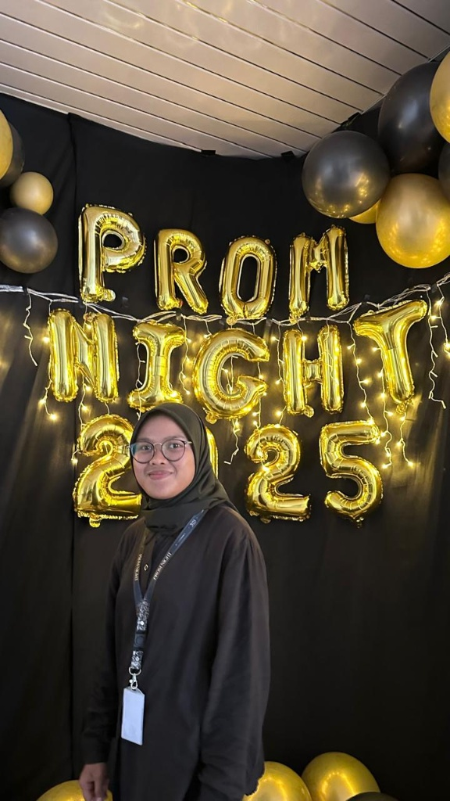
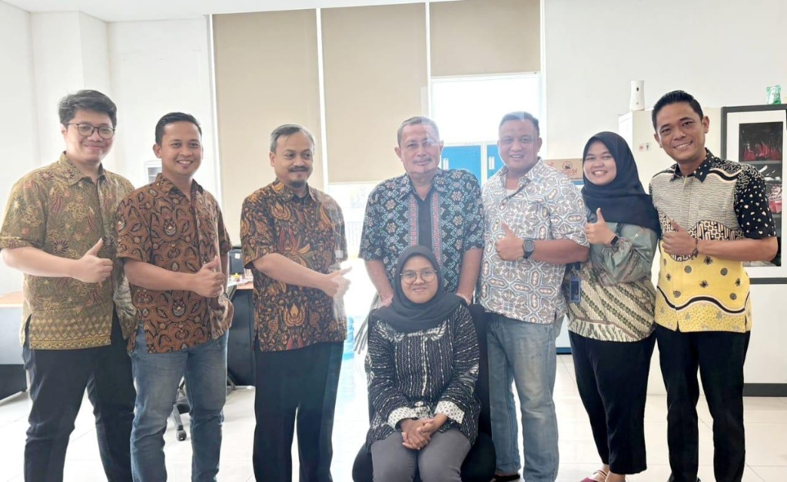
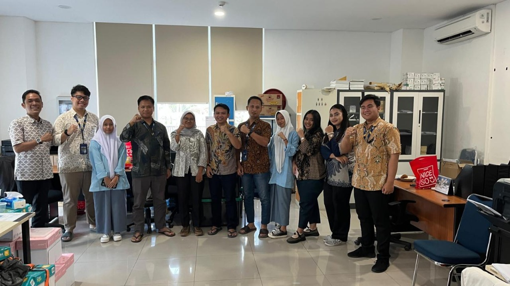
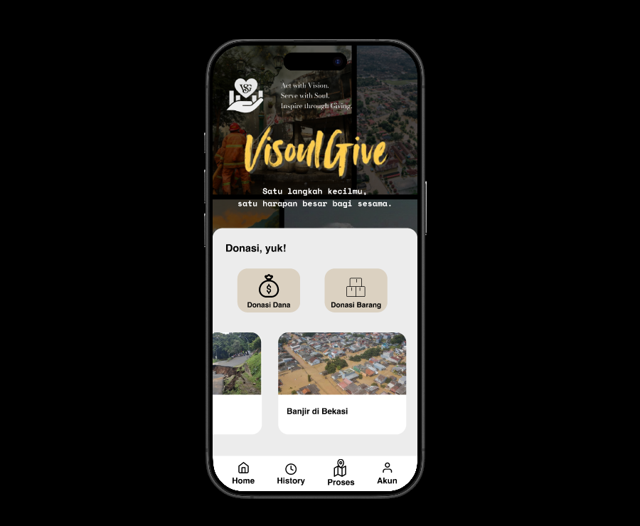
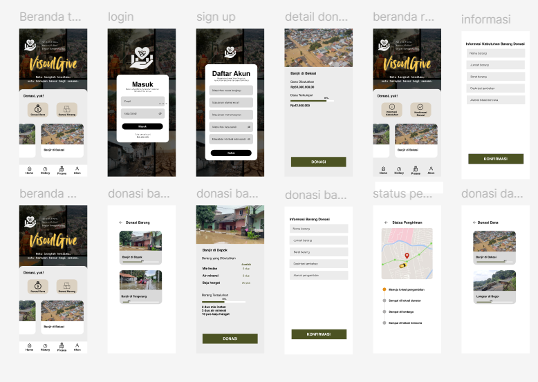
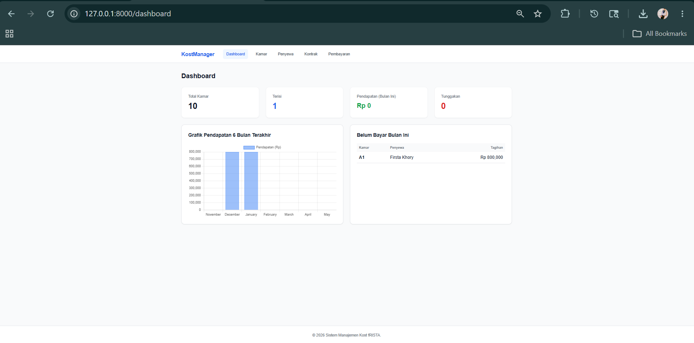
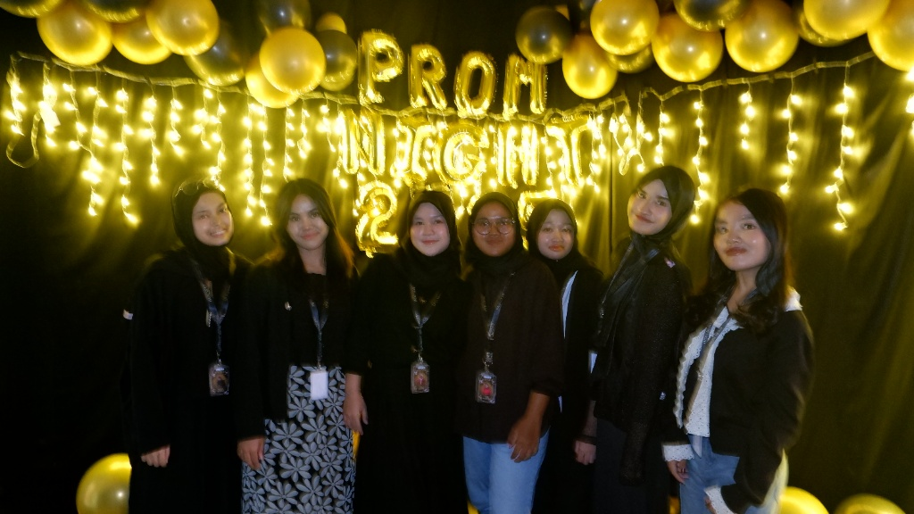
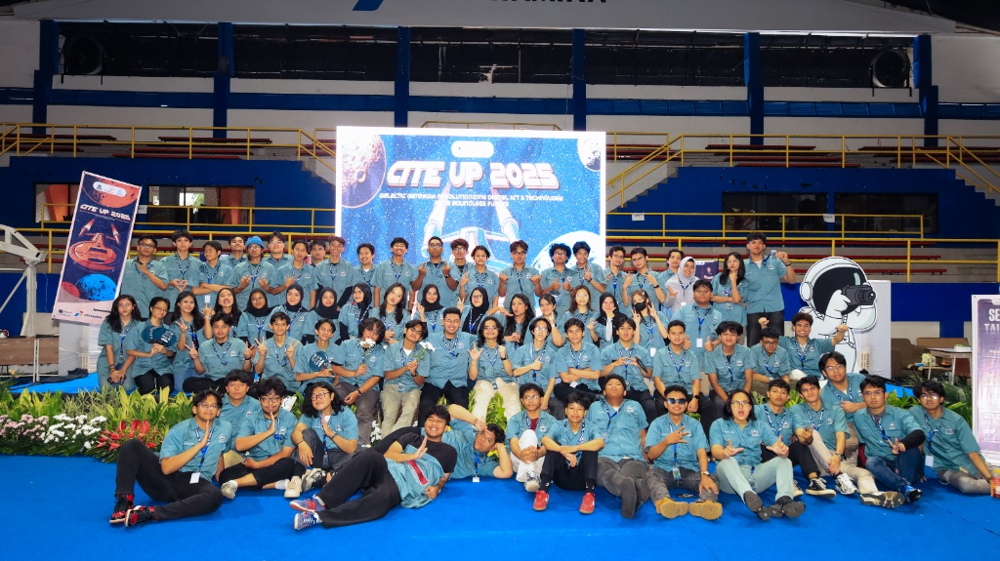

Computer Science Student @ Universitas Pertamina | Analytical Mindset & Detail-Oriented Leader
Saya adalah seorang individu yang terorganisir, adaptif, dan memiliki rasa ingin tahu yang tinggi terhadap dunia teknologi informasi dan analisis data. Karakter ini membantu saya untuk selalu teliti dalam mengelola integritas data operasional berskala besar maupun dalam merancang arsitektur sistem perangkat lunak yang solutif.
Sebagai pribadi yang komunikatif dan berjiwa kepemimpinan, saya sangat menikmati kolaborasi tim dalam memecahkan masalah kompleks. Pengalaman mengoordinasikan berbagai kepanitiaan makro melatih saya untuk tetap tenang di bawah tekanan, adaptif terhadap perubahan dinamis, serta fokus pada pencapaian target yang efisien.

Role
Secretary @ Pragya Karya
Rekam jejak kontribusi saya dalam industri analisis data & operasional jalan tol.
PT Jasamarga Toll Operator (PT CTP Cibitung-Cilincing)
PT Jasamarga Toll Operator (PT CTP Cibitung-Cilincing)


Kumpulan produk rekayasa perangkat lunak, perancangan UI/UX, serta dokumentasi milestones (Klik proyek untuk melihat rincian penuh).

Merancang platform donasi bencana transparan terintegrasi dengan dokumen spesifikasi kebutuhan sistem (SRS) terstruktur.


Aplikasi manajemen tata kelola rumah kos terintegrasi. Digitalisasi pencatatan data penyewa, alokasi status kamar, pembuatan kontrak, hingga transaksi keuangan kasir.

Sebuah momentum berharga perayaan kebersamaan, apresiasi angkatan, serta perluasan relasi profesional bersama rekan mahasiswa Computer Science.
Dipercaya memegang amanah sebagai Head of Event Division. Bertanggung jawab memimpin koordinasi tim makro, menyusun berkala timeline, serta menyukseskan kompetisi IT nasional.

1. High-Fidelity User Interface Preview
2. System Architecture & Wireframe Blueprint
Deskripsi Lengkap Proyek:
VisoulGive dikembangkan untuk mengatasi kendala kurangnya akuntabilitas pada penyaluran dana sosial. Sistem dipetakan matang menggunakan metode *software engineering* yang disiplin mulai dari penulisan kebutuhan aktor hingga pembuatan maket visual yang siap diimplementasikan ke tahap *coding* frontend.
Spesifikasi Arsitektur Sistem:
Seluruh antarmuka di atas dirancang menggunakan pendekatan yang terstruktur, memisahkan logika query database relasional secara aman untuk mencegah manipulasi data kas operasional hunian kos.
Kombinasi keahlian teknis pemrograman, arsitektur data, dan rekayasa kebutuhan sistem yang saya kuasai.
PHP (Laravel), Python, MySQL, Kotlin (Android Studio), Figma (UI/UX Design), Cisco Packet Tracer.
Data Analyst, Requirements Engineering (SRS Documentation), Object-Oriented Programming (OOP), Perancangan Pemetaan Diagram UML.